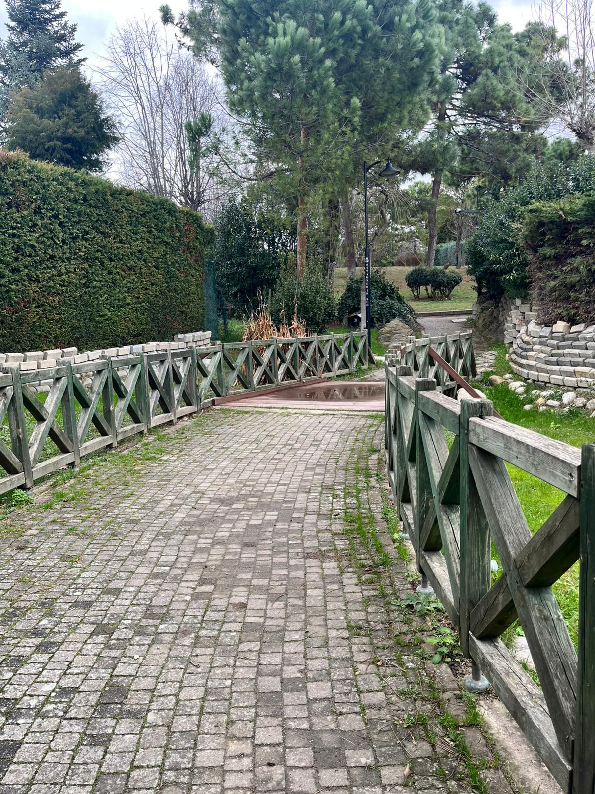
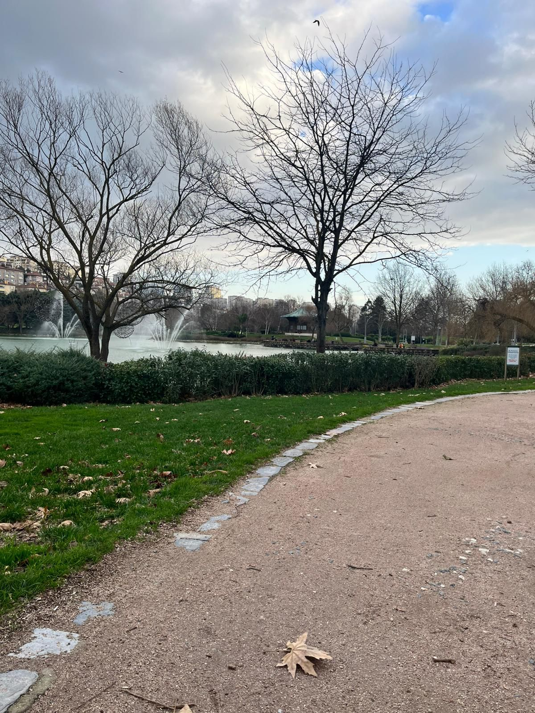
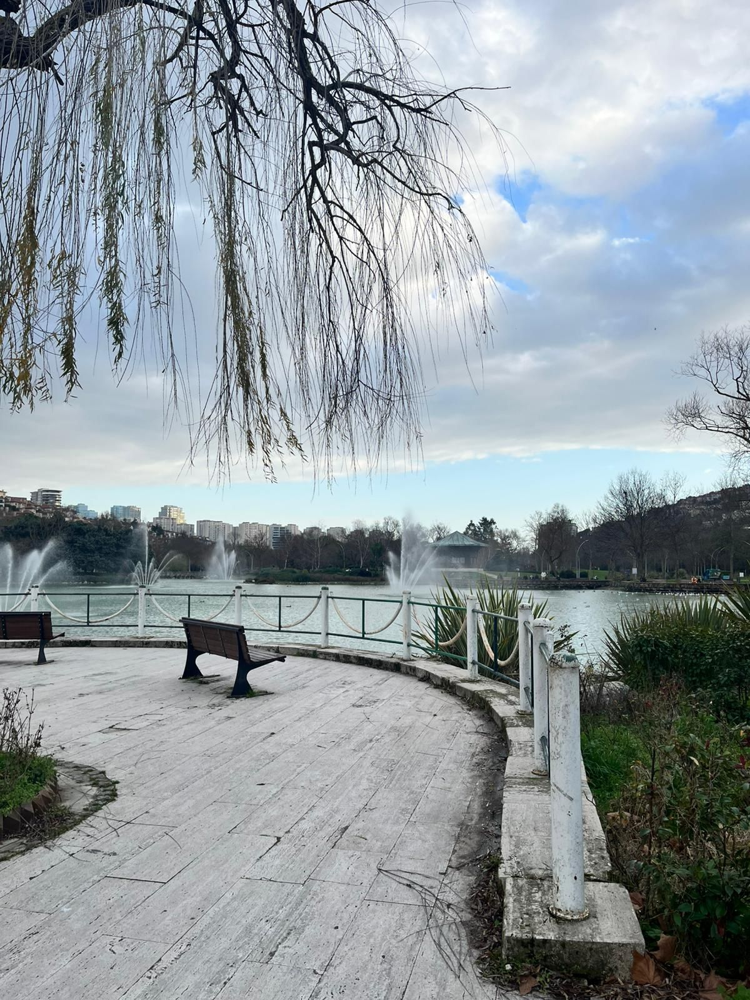
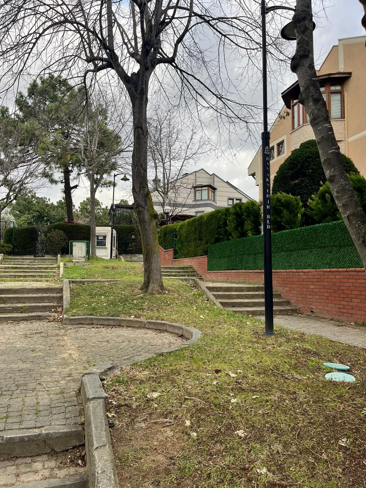
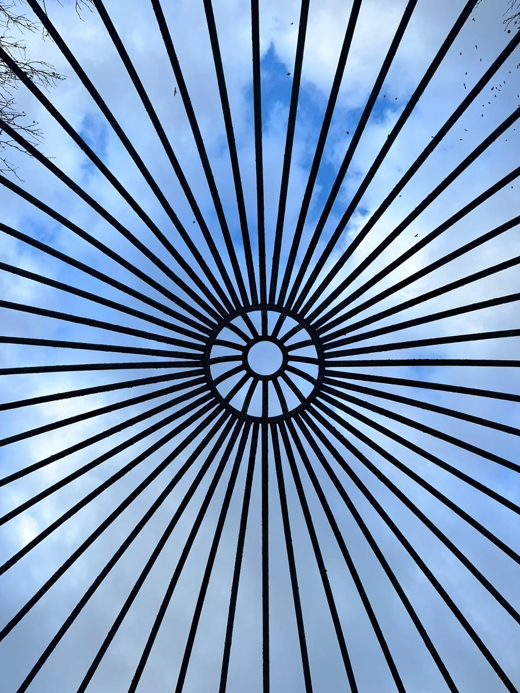
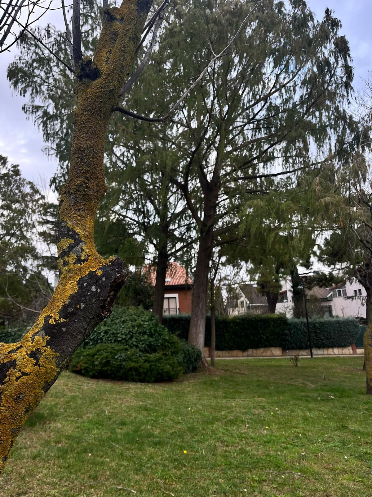
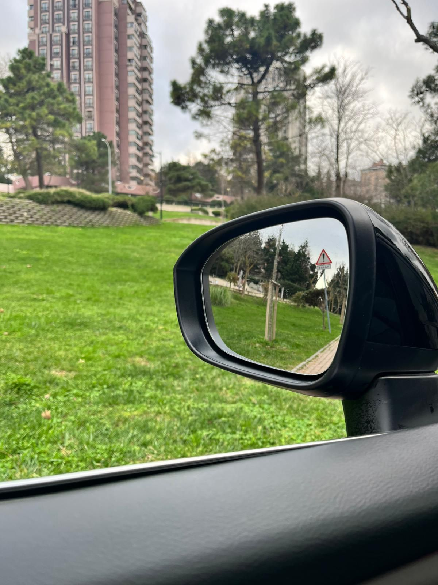
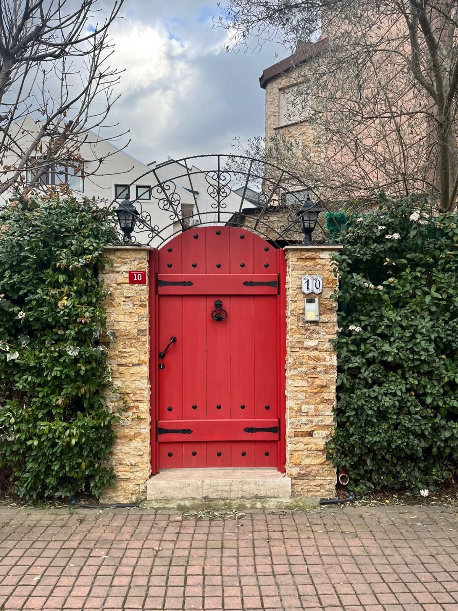
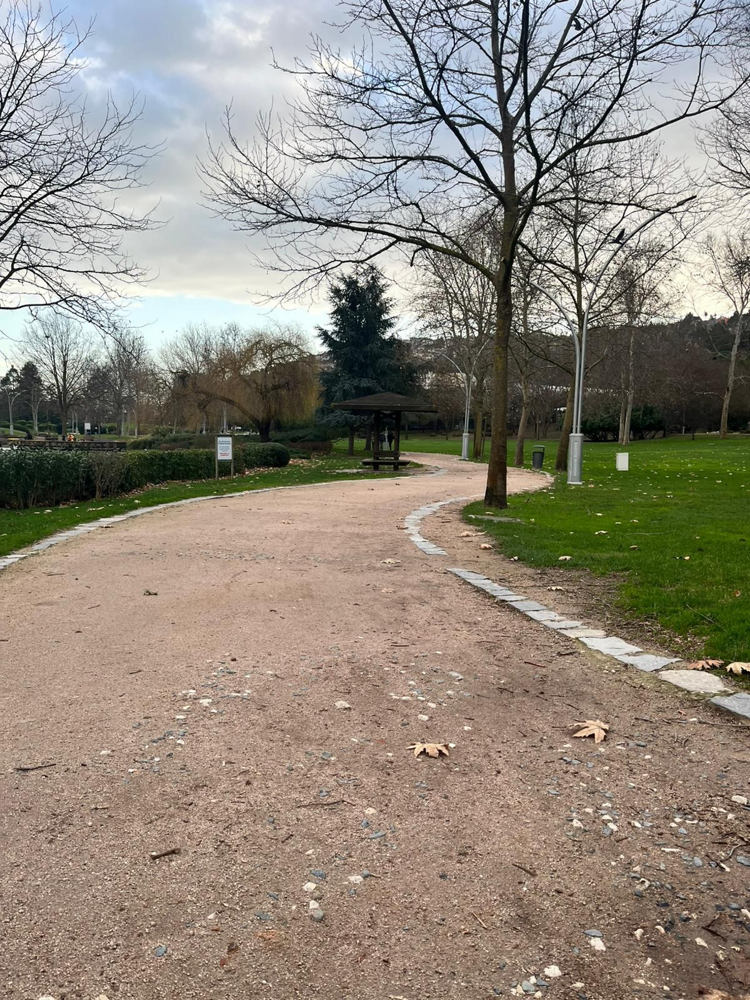
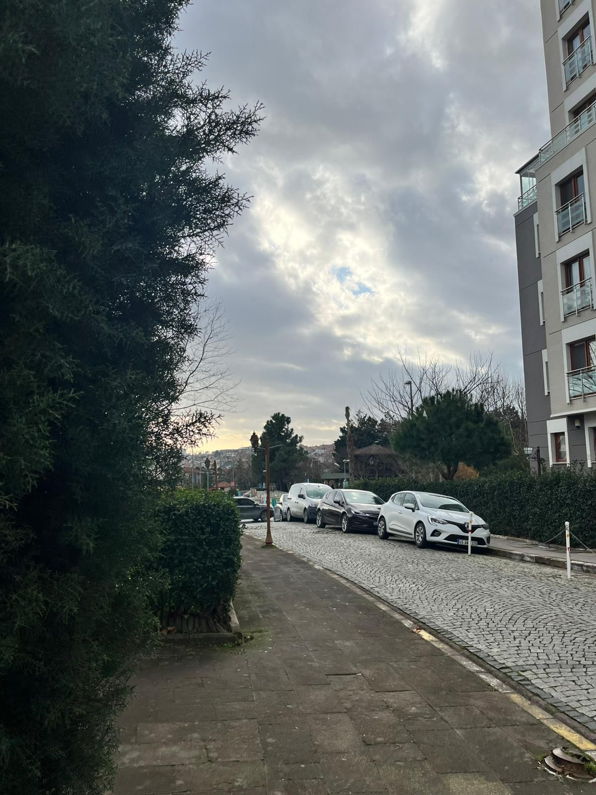

Bahçeşehir Fotoğraf Galerisi
Modern mimari, şehir planlaması ve Gölet manzaraları
Bahçeşehir Fotoğraf Galerisi
Bahçeşehir'in modern mimarisini, planlı şehir dokusunu ve yaşam alanlarını yansıtan 20 fotoğraf. Bahçeşehir Göleti'nin dingin atmosferi, modern binaların estetik tasarımları ve sosyal alanların canlılığı objektifimden.












Koleksiyon Hakkında
Bu galeride Bahçeşehir'in modern mimari yapısını, gölet çevresini ve şehir planlamasını bulabilirsiniz. Her fotoğraf, semtin çağdaş atmosferini yansıtmayı amaçlamaktadır.
Toplam Fotoğraf: 20 adet
Çekim Tarihi: Ocak 2026